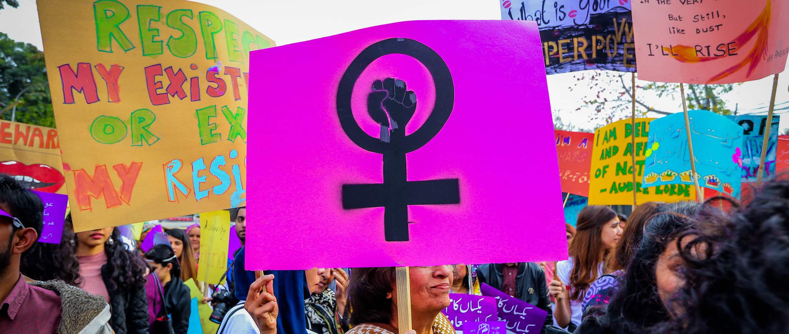

Women's rights are the rights and entitlements claimed for women and girls worldwide. They formed the basis for the women's rights movement in the 19th century and the feminist movements during the 20th and 21st centuries. In some countries, these rights are institutionalized or supported by law, local custom, and behavior, whereas in others, they are ignored and suppressed. They differ from broader notions of human rights through claims of an inherent historical and traditional bias against the exercise of rights by women and girls, in favor of men and boys.
| Topic | Description |
|---|---|
| Gender Equality | Equal pay, representation in leadership, and fair opportunities in workplaces. |
| Education | Ensuring access to education for girls and addressing gender-based barriers. |
| Reproductive Rights | Access to contraception, family planning, and reproductive healthcare. |
| Violence Against Women | Addressing domestic violence, sexual assault, and human trafficking. |
| Workplace Rights | Equal opportunities, paid maternity leave, and protection from harassment. |
| Legal Rights and Protections | Property ownership, inheritance rights, and protection from child marriage. |
| Health and Well-being | Access to affordable healthcare and addressing period poverty. |
| Political Rights | Representation in policymaking and women’s suffrage. |
| Intersectionality | Challenges faced by women of different races, ethnicities,etc. |
| Cultural and Social Challenges | Breaking gender stereotypes and improving representation in media. |
In this project we will be discussing the history, concepts and movements related to women's rights.